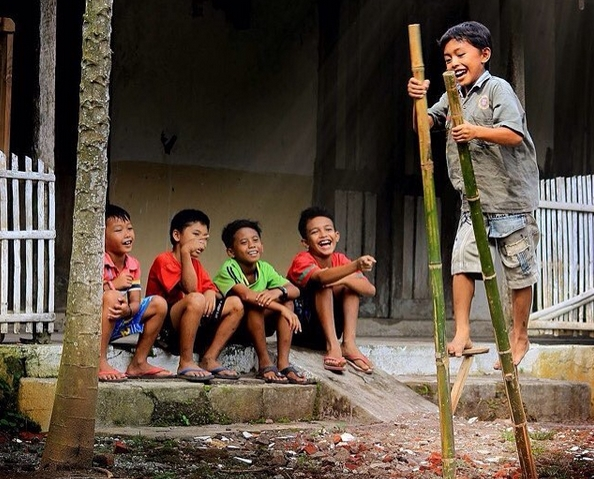
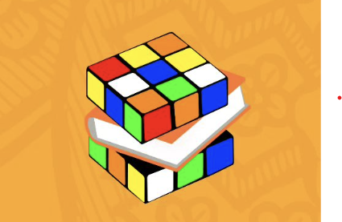

Tentang

Rubik, akronim dari Ruang Bermain Asik. Kolektif Rubik berdiri sejak 2023, diawali dari keresahan soal bahaya gadget bagi anak-anak yang berpotensi menimbulkan masalah kesehatan mental maupun perubahan perilaku. Dari premis keresahan itu, kami mencoba hadir untuk anak-anak secara konkret, lewat beberapa aktivitas. Misalnya, melalui peragaan mainan tradisional dan bahan bacaan yang akan kami gelar (lapak) di ruang-ruang publik Ibu Kota, secara gratis.
Rubik ingin mengajak anak-anak untuk kembali bermain di luar ruangan dan bersosialisasi dengan teman-teman mereka. Rubik juga ingin menyediakan akses bahan bacaan yang berkualitas untuk anak-anak.
Logo

Gambar tersebut adalah logo dari Rubik, sebuah ruang bermain asik yang bertujuan untuk mengurangi dampak negatif gadget pada anak-anak. Rubik mengadakan berbagai aktivitas gratis di ruang-ruang publik Ibu Kota, seperti peragaan mainan tradisional dan penyediaan bahan bacaan.
Alasan Kenapa Kami Memberi Nama Dan Logo Rubik
Alasan mengapa Rubik diberi nama dan logo Rubik adalah karena Rubik ingin memberikan pengalaman menarik bagi para orangtua dan anak-anak di ruang publik lewat aktifitas bermain sambil belajar. Para orangtua dan anak-anak merupakan bagian dari kubus-kubus rubik dalam poros yang sama. Bersama-sama, Rubik mencoba menyatukan setiap karakter warna tersebut melalui gesekan-gesekan permainan dan kesenangan, agar bisa menjadi satu warna yang tersusun. Makna warna-warni tersebut adalah keberagaman karakter dan kebhinnekaan. Walaupun warna-warni itu terpencar dimana-mana, namun pada dasarnya kita di poros yg sama. Rubik mencoba memainkan rubik agar bisa mempertahankan keberagaman tersebut.
Tujuan
Kami berupaya mengajak anak-anak serta orang tua di ruang publik untuk bisa
melatih kreativitas serta belajar untuk melakukan interaksi sosial melalui
permainan tradisional dan perpustakaan berjalan. Dengan demikian, harapannya
anak-anak bisa melupakan gadget sejenak dan merasakan keseruan lain yang
sebenarnya bisa sangat menyenangkan.
Rubik juga menjadi suatu wadah bagi kami untuk bisa bertemu dengan kolektif
atau organisasi lain yang serupa, maupun yang mempunyai gagasan lain. Kami
ingin bersilaturasa membuat aktivitas-aktivitas positif untuk masyarakat.